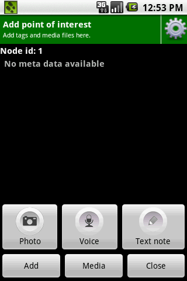
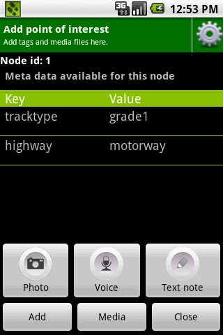

This screen lets you add tags and meta media to a map object (POI/way/area).
The following screen shows the screen as it should appear to you when you enter this activity:
On top of this view you can see the "Node id:" of the current element. If you want to add some media files like pictures, videos, voices or text notes just press one of the media buttons.
If there is no tag for the given element, the list of meta tags above the media buttons is empty. Otherwise you see all linked tags with your given category and value pair.
To add new tags for the selected element just press the "Add" button. If you finished you tagging press the close button and all changes will be saved. You can add more than one meta tag for a track element.
With a long click you can edit or delete all linked tags. With a short click on a key value pair of the list you get several information of this tag. If a picture for this tag exists at the OSM-Wiki you see this on top of the dialog box. Below you see the key value pair and a short Wikipedia description. If you want to see further informations you can click at the link for this tag.
The "Media"-Button will lead to a screen that shows you all recorded media for that object. Media can be viewn and deleted there: